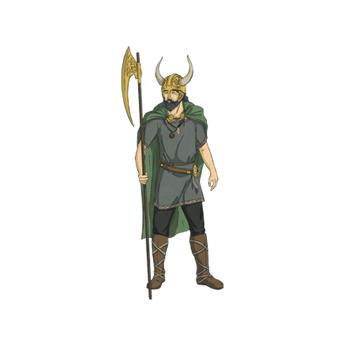

Loki
O Deus da Mentira
História do Personagem
Um diabo entre os deuses. Loki é uma figura única, famosa por suas travessuras e maldades, consumida pelo desejo de ser o rei de Asgard.
Na maioria das histórias mitológicas aparece um ser ou divindade que representa a ideia do mal. No caso da mitologia nórdica, este ser é conhecido como Loki, o Deus do Fogo e das Mentiras.
- Seu pai se chamava Fárbauti e sua mãe se chamava Laufey
- Loki teve uma única esposa, a deusa Sigyn
- Assim como outros deuses não tinham um ritual de culto em seu nome